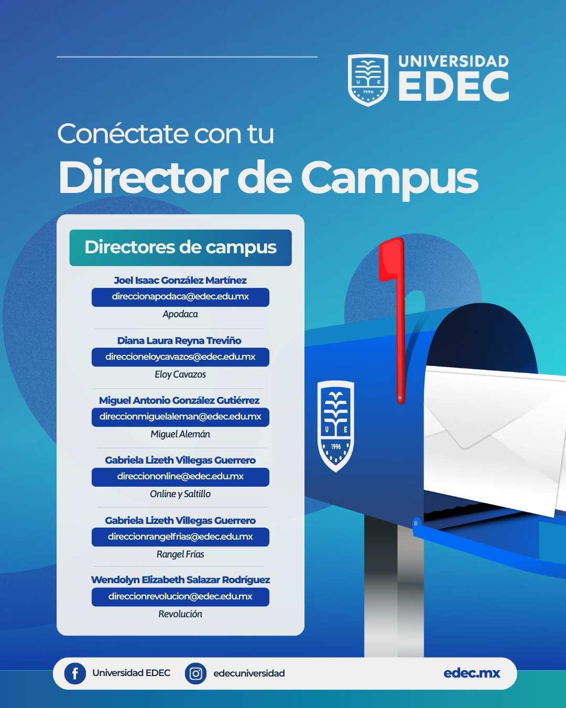
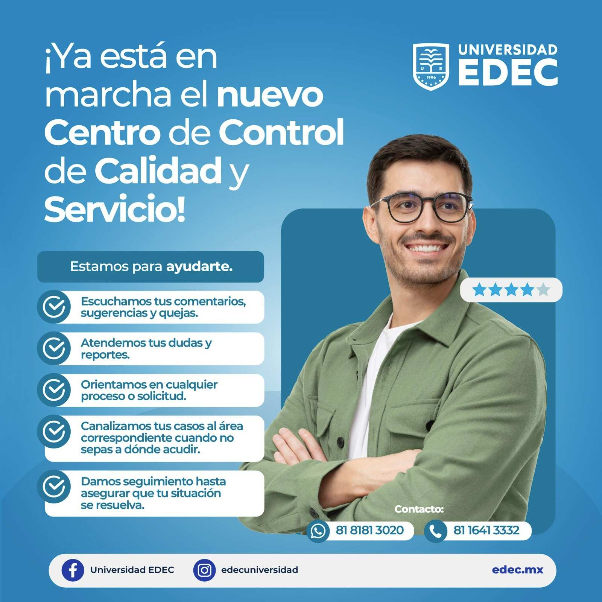
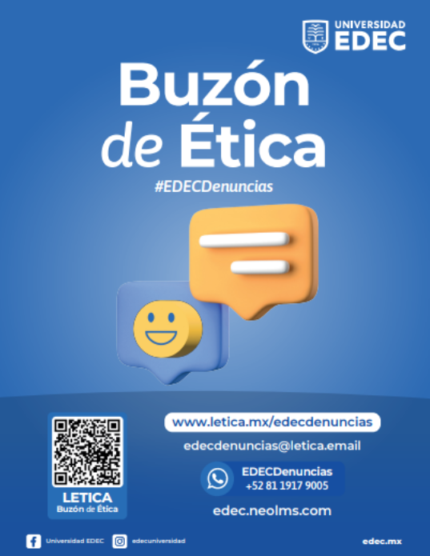

EDEC NEWS
INICIO
NOTICIAS
MEMES
MIEMBROS


Conocer a tu Director de Campus es una excelente oportunidad para entender mejor la visión, metas y valores que guían el crecimiento de nuestra institución. A través de este espacio, podrás descubrir quién está al frente de la comunidad académica.
Ver Mas
Estamos comprometidos con brindar una atención cercana, efectiva y transparente. Aquí escuchamos tus comentarios, dudas y quejas, ofreciendo un acompañamiento personalizado en cada situación.
Ver Mas
Espacio confidencial diseñado para promover la integridad y el comportamiento responsable dentro de nuestra comunidad. Aquí puedes reportar situaciones que vayan en contra de nuestros valores, expresar inquietudes, o señalar conductas inapropiadas de manera segura y respetuosa.
Ver Mas
Aquí encontrarás instrucciones paso a paso para acceder a tus cursos, revisar tareas, consultar calificaciones, comunicarte con tus profesores y aprovechar todas las herramientas disponibles para tu aprendizaje. Nuestro objetivo es brindarte un apoyo completo para que utilices la plataforma al máximo y tengas una experiencia académica más organizada, accesible y eficiente.
Ver Mas